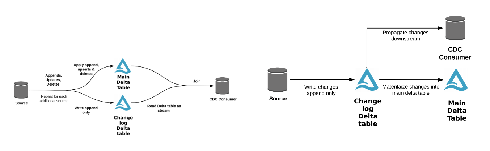

Hacking Delta Lake MERGE with UDFs and Accumulators
Nick Karpov
4-10-2024
A few years ago I was lucky enough to work with some of Databricks' largest customers driving the product requirements of what eventually became Delta Lake's Change Data Feed (CDF).
Despite the success Delta was having it could still be a frustrating user experience at times. On the one hand, Delta catapulted transactional capabilities over Parquet into the mainstream, bringing real ACID-like SQL semantics over cloud based storage. On the other hand, the technology was just nascent enough to still encounter curious and at times fatal edge cases.
Capturing change data from Delta tables was one of those cases: it was a plain nightmare back then. Any time you needed to work with mutating data downstream you either had to solve how to split and merge your data flow, which was hard to reason about and later maintain, or use the time travel feature to compare the current state of the table to previous versions, which was often prohibitively expensive. Sometimes, you'd have to do both.
One illustration of the spaghetti we got was reference diagrams like this, which in hindsight is a little awkward for a technology purporting to solve λ-lambda architecture hell. The code to implement these one sentence arrow descriptions is frightening.

Now today, Delta Lake's Change Data Feed has comprehensive SQL support and is extremely performant. It's actually a critical part of many other innovations on the Databricks platform, like Delta Live Tables and Materialized Views. Still, I find myself reflecting on the clunky pre-CDF era, and discovering that there's much that can be learned from that time.
In particular is the example I'll spend the rest of this post working through. It's a fun take on how to produce real time change data without the Change Data Feed feature, by leveraging the unique flexibility of Spark to hijack the MERGE command. I like this example because you can actually run it yourself from user land. It's educational for both Spark and Delta, a little dangerous (many smart people told me this was a bad idea), and demonstrates that the Spark & Delta engine-storage duo has no real peer.
Accumulate All The Things
We'll actually start with one of the long lost features of Spark: accumulators. I say they're long lost because they're now usually only used for internal Spark development and custom extensions. Most end users don't (and honestly shouldn't) really use them.
The accumulator is one of the original features of Spark: a globally shared variable in your Spark session that all executors have access to. Here's a minimal example of an accumulator that we can add to while applying a function to an RDD. I'm starting here with an RDD to just to highlight how “old” accumulators are.
def add_to_acc(x):
global acc
acc += x
acc = sc.accumulator(0)
rdd = sc.parallelize([1,2,3])
rdd.foreach(add_to_acc)
>>> acc.value
6Accumulators can also be used with the more modern DataFrame APIs. A lot of the statistics collection that occurs under the hood in both Spark and Delta is done via User Defined Functions (UDFs) that update accumulators as a side effect while performing their core operations
@udf
def multiply_and_stats(val):
global acc
acc += val # side effect collecting stats
val *= 2
return val
from pyspark.sql.functions import col
acc = sc.accumulator(0)
spark.range(4).withColumn("new", multiply_and_stats(col("id"))).collect()
>>> acc.value
6If you haven't seen an accumulator before, you'll notice that their type is inferred as an integer based on the starting value sc.accumulator(0) in the snippets above. We add to the accumulator via multiply_and_stats by calling it from some higher level map-like construct such as foreach(multiply_and_stats) or withColumn(multiply_and_stats).
Accumulators aren't limited to only primitive types though. You have to do a little work implementing the right methods, but it's not too hard to extend support to a list type for example.
from pyspark.accumulators import AccumulatorParam
from pyspark.sql.functions import udf
from pyspark.sql.types import IntegerType
class ListAccumulatorParam(AccumulatorParam):
def zero(self, initialValue):
return []
def addInPlace(self, v1, v2):
v1 += v2
return v1
list_acc = sc.accumulator([], ListAccumulatorParam())
@udf(returnType=IntegerType())
def add_to_list_accumulator(obj):
global list_acc
list_acc.add([obj])
return obj
from pyspark.sql.functions import col
spark.range(4).withColumn("new", add_to_list_accumulator(col("id"))).collect()
>>> list_acc.value
[1, 3, 2, 0]This pattern is actually used by Delta internally. Here's some notable excerpts from the merge command in ClassicMergeExectutor where all the touched files are collected into a SetAccumulator in the first join.
// accumulator definition
val touchedFilesAccum = new SetAccumulator[String]()
// wrap access in a UDF
val recordTouchedFileName =
DeltaUDF.intFromStringBoolean { (fileName, shouldRecord) =>
if (shouldRecord) {
touchedFilesAccum.add(fileName)
}
1
}.asNondeterministic()
// apply UDF
val collectTouchedFiles = joinToFindTouchedFiles
.select(col(ROW_ID_COL),
recordTouchedFileName(col(FILE_NAME_COL), Column(matchedPredicate)).as("one"))
// access accumulator
val touchedFileNames = touchedFilesAccum.value.iterator().asScala.toSeqBut what do accumulators have to do with change data?
Well, nothing really. At least not yet. Let's see what happens when we introduce our own accumulators to the king of SQL operations: MERGE.
MERGE me twice. Won't get MERGEd again.
MERGE is my favorite command. It can conditionally perform every kind of change operation possible with the ACID guarantees of a single transaction. There's nothing else like it (you should study it!). Coupled with Spark's language environment interoperability, it offers near limitless flexibility – which is exactly what we're going to exploit.
Below is a common MERGE users will recognize. You specify a target and source, a join predicate, and define what to do when rows from both tables are either MATCHED or NOT MATCHED. You can stack these clauses and differentiate them with additional predicates as we do below by checking the value of s.type.
MERGE INTO target t
USING source s
ON t.id == s.id
WHEN MATCHED AND s.type = 'UPDATE' THEN
UPDATE SET *
WHEN MATCHED AND s.type = 'DELETE' THEN
DELETE
WHEN NOT MATCHED AND s.type = 'INSERT' THEN
INSERT (...) VALUES (...)The key insight about both types of predicates in the MERGE command is that they are actually just arbitrary expressions that return True or False. We're not limited to simple equality predicates!
A UDF is also just an arbitrary expression: a much more powerful one we can customize. Let's do just that with this snippet, where we create a UDF wrapper that takes any number of parameters, adds them to the list accumulator we defined earlier, and then just always returns True.
acc = sc.accumulator([], ListAccumulatorParam())
@udf(returnType=BooleanType())
def wrapper(*obj):
acc.add([obj])
return True
spark.udf.register("wrapper", wrapper)Why do we always return True? Well, we actually don't have to, so keep it in mind. We'll return to this point in a bit.
For now, let's make use of this UDF by replacing our existing clause predicates with wrapper(val1, val2, ...).
WITH source AS (
SELECT col1 as id, col2 as val FROM VALUES (1, "a"), (2, "b")
)
MERGE INTO target t
USING source s
ON t.id == s.id
WHEN MATCHED AND wrapper(s.id, s.val, t.id, t.val) THEN
UPDATE SET *
WHEN NOT MATCHED AND wrapper(s.id, s.val) THEN
INSERT (id, val) VALUES (s.id, s.val)Our target is currently empty, so there will be no matches when we run this. Only the INSERT in the WHEN NOT MATCHED clause will trigger. The result is that our target will have the two rows we define in the WITH source AS clause:
SELECT * FROM target;
+---+---+
| id|val|
+---+---+
| 1| a|
| 2| b|
+---+---+Now for the interesting part, what did wrapper do? Let's check the accumulator value.
>>> acc.value
[(1, 'a'), (2, 'b')]Now that's a side effect we can work with! We've stored both rows in memory during the MERGE. Let's reset the accumulator and run the MERGE again. This time our source and target have the exact same data, so we'll end up triggering the actions in the WHEN MATCHED clauses, updating the rows, and finish with an accumulator list like this:
>>> acc.value
[(2, 'b', 2, 'b'),
(1, 'a', 1, 'a'),
(1, 'a'),
(1, 'a', 1, 'a'),
(2, 'b'),
(2, 'b', 2, 'b')]The values in this list represent every comparison made after source and target were joined by the predicate in the ON. This is because we added the wrapper UDF to both the MATCHED and NOT MATCHED clauses. Since our UDF supports arbitrary number of arguments, we can update the values we pass in to include a tag to make this more clear:
WHEN MATCHED AND wrapper(..., "MATCHED")
WHEN NOT MATCHED AND wrapper(..., "NOT MATCHED")
>>> acc.value
[(2, 'b', 2, 'b', 'MATCHED'),
(1, 'a', 1, 'a', 'MATCHED'),
(1, 'a', 'NOT MATCHED'),
(1, 'a', 1, 'a', 'MATCHED'),
(2, 'b', 'NOT MATCHED'),
(2, 'b', 2, 'b', 'MATCHED')]It may feel intuitively wrong to get 6 values in our accumulator when we only had 2 rows in both source and target, and if you squint at the "NOT MATCHED" rows you may wonder why they're present at all. If we're merging two equivalent tables, shouldn't we only have matches?
Well, we do only have matches, but SQL is declarative, and we've now tapped into the implementation. The values are recorded because the comparisons must actually happen.
Those clauses in our command that now include the wrapper UDF are expanded for the output columns, so there are multiple nested comparisons happening for each and every row in the result of our join. In other words, there are more comparisons than there are rows. This is also why you can accidentally make your MERGE very very expensive! The gory details of this can be seen in the guts of the MERGE implementation.
Anyway, what makes all these details visible in our example is that our wrapper always returns True and always records the values passed into the wrapper. In the boolean expression MATCHED AND True, the True is reduntant, and therefore the expression always simplifies to MATCHED. There is no impact on the logical results of our MERGE; the wrapper(...) call is transparent apart from our desired accumulator side effect.
So why do all this!?
In most scenarios - you shouldn't! But there are practical uses beyond just learning the inner workings of Spark and Delta.
You can stack these UDFs in places other than the clause conditions, like, for example, the actions within those clauses. In the snippet below we modify our UDF to return its input instead of a boolean. Here's what happens when we use it to wrap the values in our actions.
@udf
def wrapper(obj):
acc.add([obj])
return obj%sql
MERGE INTO target t
USING source s
ON t.id == s.id
WHEN MATCHED THEN
UPDATE SET val = wrapper(s.val)
WHEN NOT MATCHED THEN
INSERT (val) VALUES (wrapper(s.val))
>>> acc.value
['b', 'a']Notice that despite having wrapper nested in both action clauses, this time we only get a single result per matching row. This is because we're no longer triggering a transparent wrapper call for every conditional clause check. We're only triggering it when we actually execute the action after the clause is resolved.
The ability to do these kinds of funky things is all coming from how flexible the Spark computing environment is. To mix this core Spark Accumulator feature into a SQL command via an arbitrary Python function directly from user land? What's not to love?
Where to go from here?
With this UDF-Accumulator pattern you can have your own in memory real time change data capture that actually has faster "time to first row" than the core Change Data Feed feature. This is because we hijack the comparisons as we're doing them before we've written any output files. So, for example, if you're doing MERGE in a stream with a long batch time - that means you're waiting a while for something that's already been done!
If you've ever wanted to know which row in your source didn't match your target, which is regularly asked about in Slack and mailing lists, you now not only have a way to do it, but an in memory way that's available to you directly in the Spark session.
You can extend the UDF to do pretty much anything. You could conceivably do all your conditional logic within a UDF instead of the higher level MERGE command. Do you have a REST endpoint you might need to hit? I hope not, of course, but, you should know that you can!
Is any of this safe?
This may enrage anyone concerned about the hard earned transactional guarantees of Delta that have been compromised by all of this. After all, we're producing side effects with no respect to the driving transaction. What happens if this fails with partial results? A repeated task? How about scale? Aren't I tipping over my driver node with this? These are all valid concerns.
We've also exposed ourselves to the inner implementation of MERGE that doesn't respect any API contract. What happens when the implementation changes in future versions? Also a good question.
I think knowing how flexible these technologies are is always good. In any case, if this unlocks something for you, you can always engineer and test around the tradeoffs.
Ultimately, I wrote this post to confirm some of my own understanding, and hopefully to provide some deeper insight into what all is happening when you run a MERGE with Spark and Delta. In principle what we've walked through here is how to create an escape hatch from the MERGE command while leveraging its core JOIN and conditional map operations. What's possible from here is just about anything!